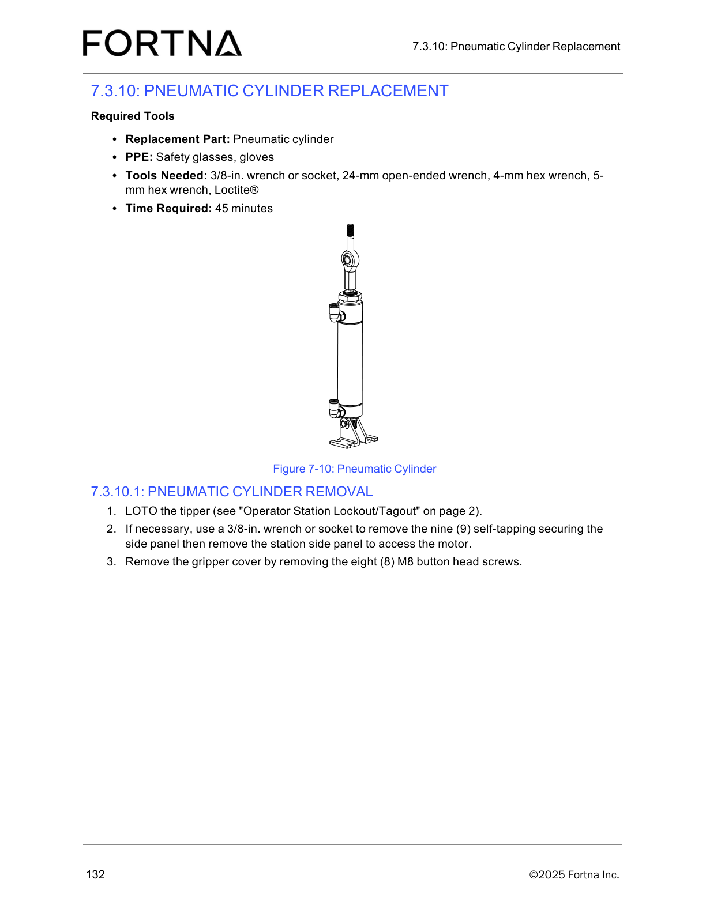

| Procedure ID | proc_remove_tipper_pneumatic_cylinder_loto_v1 |
|---|---|
| Title | Remove a Tipppper Pneumatic Cylinder (LOTO, side panel, gripper cover, air lines, retaining ring/pin, lower bracket screws) |
| Procedure Type | recovery |
| Primary Role | operator |
| Support Safe | Yes |
| Capability Tags | tipper_station_fault |
| Access Surface | physical_floor |
| Audience Roles | operator |
| Failure Pattern Tags | None |
| Validation Status | needs_sme_review |
| Merge Status | source_finalized |
Safely remove the tipper pneumatic cylinder assembly for replacement by following the documented disassembly sequence and verifying the cylinder is released before removal.
Use when replacing the OptiSweep tipper pneumatic cylinder assembly and you need to remove it in the documented sequence (LOTO → side panel/gripper cover access → disconnect air lines → release lift plate via retaining ring/pin → remove lower bracket screws to free the cylinder).

Responsible role: operator
Instruction:
Apply lockout/tagout (LOTO) to the tipper using the manual’s “Operator Station Lockout/Tagout” method.
Expected result:
The tipper is locked out (LOTO applied) before proceeding to remove side panel/gripper cover components.
Stop or Escalate If:
Responsible role: operator
Instruction:
If necessary for access, use a 3/8-in. wrench or socket to remove the nine (9) self-tapping securing screws for the station side panel, then remove the station side panel.
Expected result:
Station side panel is removed (when needed) and the motor area is accessible.
Stop or Escalate If:
Responsible role: operator
Instruction:
Remove the gripper cover by removing the eight (8) M8 button head screws.
Expected result:
Gripper cover is removed and the pneumatic cylinder area is accessible.
Stop or Escalate If:
Responsible role: operator
Instruction:
Remove the two (2) air lines from the pneumatic cylinder.
Expected result:
Both air lines are disconnected from the pneumatic cylinder.
Stop or Escalate If:
Responsible role: operator
Instruction:
At the rod end of the cylinder, remove one retaining ring and pull the pin releasing the lift plate; the lift plate will drop a short distance.
Expected result:
Lift plate releases and drops a short distance after removing the retaining ring and pulling the pin.
Stop or Escalate If:
Responsible role: operator
Instruction:
At the bottom of the cylinder, remove two (2) M6 socket head screws to release half of the lower bracket and free the air cylinder.
Expected result:
Cylinder is freed after removing the two (2) M6 socket head screws (lower bracket released).
Stop or Escalate If: